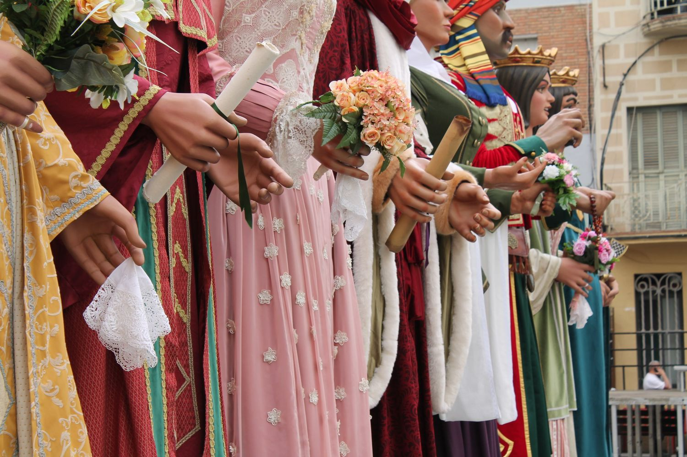
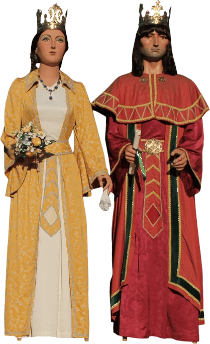
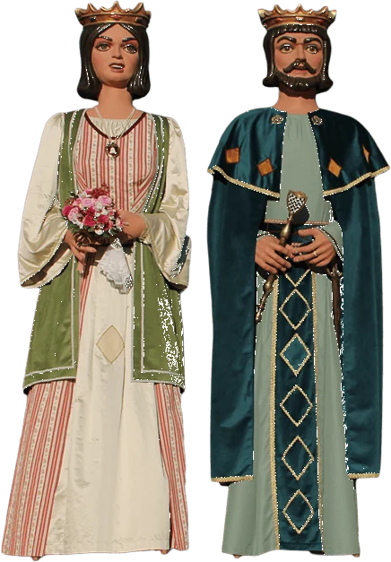
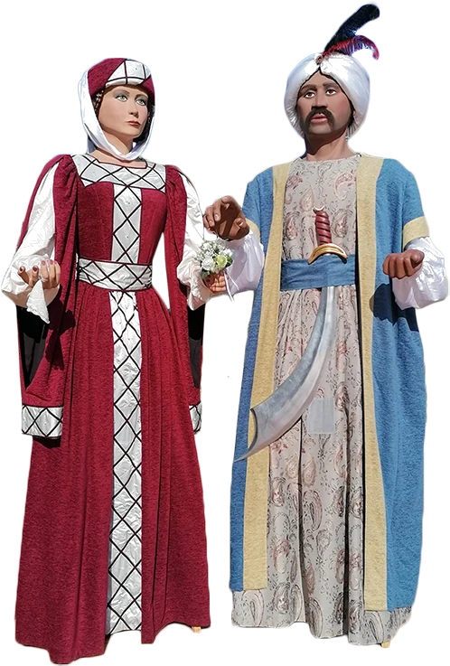
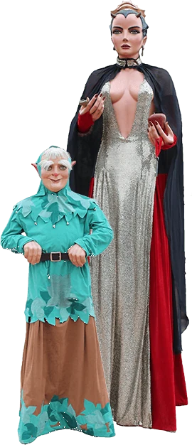
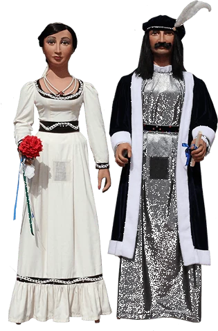
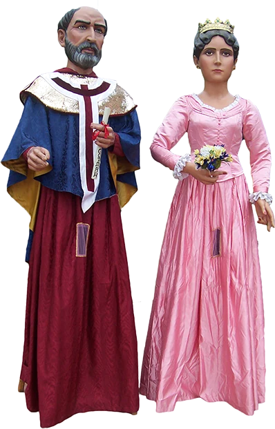

Quatre parelles i els petits
Anastasi i Maria, Jeroni i Badamar, Ferrer de Gualbes i Elionor de Santcliment, Ripal i Brunel·la del Mar, la Dimonieta i el Follet, i dues parelles més de gegants petits.
Anastasi i Maria
Els gegants més antics de la ciutat

L'Anastasi i la Maria són els gegants més antics de la ciutat. Les seves sortides més importants són el 10 i l'11 de maig, diada de Sant Anastasi (Festes de Maig), i el 15 d'agost, diada de Santa Maria (Festa Major).
L'orígen d'aquests gegants el trobem el 1858, moment en que són adquirits per la Confraria de Sant Anastasi. Aquelles figures foren comprades a un taller barceloní pel preu de 1270 pessetes de l'època. Els gegants que van arribar a Badalona vindrien a imatge d'un antic conseller de la ciutat de Barcelona i una dama vestida a la moda de l'època vuitcentista.
Any rere any i fins al 1880 van anar sortint ininterrompudament al carrer, però llavors ho deixaren de fer degut als problemes econòmics que suposava restaurar-los per part de la Confraria. Així que 14 anys més tard, la Comissió de Festes de l'Ajuntament després d’algunes converses i reunions entre ells i la Confraria acordaren un preu amb el qual l’Ajuntament els comprà i els arreglà.
A partir dels anys 20 el gegant deixà enrere aquell barret tan característic que encara porta avui en dia per lluir una corona, de la mateixa manera que ho va fer la geganta. Al cap d'uns anys, amb la proclamació de la segona República (1931) les corones foren tretes de les testes dels gegants, tal i com passà en moltes poblacions catalanes.
Van estar en actiu fins als anys 40, quan a causa del seu mal estat foren substituïts per una altra parella. L’any 1981 es varen trobar els antics gegants al dipòsit de la Brigada Municipal i 4 anys més tard, després de ser restaurats, van tornar a sortir al carrer. L’any 1986 varen patir un incendi i van haver de ser reconstruïts i és que quedaren molt malmesos. Des de 1987 fins a dia d’avui han sortit cada any per Festa Major, havent canviat de vestit l’any 2000.
El desembre de 2009, en motiu de la capitalitat de Badalona de la Cultura Catalana 2010, es varen escollir els set tresors materials i culturals de la nostra vila, amb la sort que n’Anastasi i na Maria foren escollits 7è tresor de la Ciutat.
Fitxa tècnica
| Anastasi | Maria | |
|---|---|---|
| Alçada | 3,82 m | 3,76 m |
| Pes | 80 kg | 70 kg |
| Any de construcció | 1858 | 1858 |
| Constructor | Desconegut | Desconegut |
| Any de restauració | 1985 · 1987 | 1985 · 1987 |
| Restaurador | Jordi Grau | Jordi Grau |
Què ballen?
El seu ball per excel·lència és "La Coqueta", una havanera composta per Josep Olivella. La coreografia es va estrenar el 1992 durant les Festes de Maig. Com a ball propi també tenen, des de la seva recuperació, el "Valset de Badalona" que forma part del Ball de Gegants i Capgrossos de Badalona estrenat el 1982.
Des del 1990 interpreten el Ball de Santa Maria durant les ofrenes de l'Ofici de Festa Major a dins de l'església de Santa Maria cada 15 d'agost. Aquesta melodia està extreta del Llibre Vermell de Montserrat.
A la Festa Major del 2008 estrenen el "Ball del 150è aniversari", una composició d'Enric Montsant i que en la versió original hi participen el Tasi i la Mariona. Tanmateix, també encapçalen el Ball de Cort, un ball estrenat el 1998 i on hi participen les quatre parelles de la ciutat.
Fotos
Jeroni i Badamar
Els gegants Reis, també coneguts com els gegants del Corpus

Quan els gegants vells deixaren de sortir pel seu mal estat i el seu pes més que considerable (s’apropaven als 100kg) l’Ajuntament encarregà al taller barceloní “El Ingenio” una nova parella de gegants per a la ciutat. Aquests, coneguts tradicionalment com els “gegants Reis” o “els gegants del Corpus”, varen aparèixer a Badalona per la Festa Major de 1946 i sortiren sense interrupció fins a finals dels anys seixanta.
Al llarg de la seva primera etapa de vida varen canviar de vestit a finals dels anys 50, mantenint el seu aspecte reial però posant-los-hi una capa i renovant el cavallet, fet que va fer que decreixessin en alçada.
A mitjans dels anys 90, gairebé 25 anys després de la seva desaparició, la Colla de Geganters de Badalona engegà un projecte per a recuperar-los. Tot i que mai més s’han trobat els gegants d’aquells temps, l’any 1996 fou estrenada una còpia dels gegants feta a partir de fotografies i dels antics motllos a càrrec del taller terrassenc “El Drac Petit”.
Foren batejats amb noms molt badalonins: ells es diu Jeroni (duu el nom del Monestir del segle XV que hi ha a la Serralada de Marina, Sant Jeroni de la Murtra) i ella, Badamar (relacionant Badalona i la mar, que sempre han estat molt lligades).
Aquesta és la parella de gegants més viatgera i que representa la nostra ciutat a les diverses festes majors del país i de l’estranger: han arribat a viatjar a Bèlgica, Itàlia, França i Romania.
Fitxa tècnica
| Jeroni | Badamar | |
|---|---|---|
| Alçada | 3,60 m (i 20 cm de corona) | 3,54 m (i 22 cm de corona) |
| Pes | 49 kg | 46 kg |
| Any de construcció | 1946 | 1946 |
| Constructor | Taller «El Ingenio» | Taller «El Ingenio» |
| Any de recuperació | 1996 | 1996 |
| Constructor de la còpia | Jordi Grau | Jordi Grau |
Una nova imatge i simbologia
El 7 de maig de 2021, coincidint amb el 75è aniversari històric, les figures van presentar nova imatge amb l'estrena de joies (per part del taller Lacedemon), vestits (projectat per la figurinista Gemma Malé) i perruques (obra de Damaret). La nova simbologia va incorporar nous elements vinculats al Corpus i al Monestir de Sant Jeroni de la Murtra.
Fites
Des de la seva recuperació, els Gegants del Corpus destaquen per participar en diverses fites i actes emblemàtics. Així, el 2005(malgrat la pluja) participen en una baixada de gegants amb barca pel Riu Ebre i el 2010 participen en la rebuda, retransmesa per TV3, dels tres Reis de l'Orient de la ciutat. Tanmateix, el 2004 reben la flama dels Specials Olympics quan la ciutat en va ser seu i el 2007 participen en diverses representacions de l'Auca del Senyor Esteve en motiu del centenari de la obra.
Què ballen?
El seu ball pròpi és "La Melicana", estrenat el 10 de maig de 1999. És una havanera de Jaume Vidal que es va usar per coreografiar la dansa. Els moviments simètrics i el cop d'esquena final han fet que aquesta dansa hagi estat demanada en moltes mostres de balls. L'any 2015 aquest ball va rebre el primer premi del concurs de balls de gegants celebrat a Igualada.
Fotos
Ferrer de Gualbes i Elionor de Santcliment
Els gegants valencians, o gegants falleros

En Ferrer i la Elionor són la tercera generació de gegants del comú. De totes les parelles de gegants de la ciutat són els únics que representen personatges que realment van existir en un moment de la història de la ciutat. Són coneguts com els "gegants valencians" o bé els "gegants falleros", degut a que foren construïts molt a prop de la ciutat de València, terra de falles.
Les figures que surten a ballar actualment són una rèplica de les que es van trobar a finals dels anys 1980 a l'antiga Caserna de Bombers de Dalt la Vila. En un primer moment, després de ser trobats, a molts els hi va costar reconèixer les figures. Poc després es va reconèixer que eren unes peces que havien ballat per la ciutat durant una dècada i, que per la seva morfologia i estructura, segurament es van fer a terres falleres.
L'1 de maig del 1971 es va estrenar una parella de gegants coronats durant les festes en honor a Sant Anastasi. No es coneix cap document que indiqui de quin taller i autor provenien, però sabem que, casualment, el Dimoni de 1973 es va encarregar a València.
Aquesta parella de gegants va anar sortint a les festes de Sant Anastasi i la Festa Major. Se sap que les figures van tenir algunes sortides fora de la ciutat com ara a Barcelona i a Sant Adrià del Besós. Les darreres sortides conegudes foren a Caldes d'Estrac i a Argentona a l'any 1980.
Es van reestrenar el 10 de maig de 1990 amb l'apadrinament dels gegants del Pi de Barcelona i de Teià. Han sortit en poques ocasions de la ciutat, si bé en alguna ocasió han viatjat fins a l'illa de Còrsega (Itàlia).
Fitxa tècnica
| Ferrer de Gualbes | Elionor de Santcliment | |
|---|---|---|
| Alçada | 3,51 m (i 7 cm de corona) | 3,46 m (i 7 cm de corona) |
| Pes | 49 kg | 46 kg |
| Any de construcció | 1971 | 1971 |
| Constructor | Desconegut (València) | Desconegut (València) |
| Any de restauració | 1991 | 1991 |
| Restaurador | Jordi Grau | Jordi Grau |
Què representen?
Ferrer era un noble, l’escut del qual lluïa les onades blaves sobre fons argentat actualment el nostre escut, l’escut de Badalona. Aquest es va casar amb l'Elionor que era Pubilla dels barons de la Torre de Badalona, i que s’havien quedat sense descendència masculina en aquells moments. Aquest fou el motiu pel qual en Ferrer aportà el seu escut però hagué de renunciar al seu cognom per tal que els Senyors de Badalona continuessin amb el nom de Santcliment.
Nova imatge i simbologia
El 7 de maig de 2021, coincidint amb el seu 50è aniversari, els gegants valencians presenten nova imatge amb complements i vestuari. La iconografia incorporada es basa en diversos elements dels escuts de les Famílies de Santcliment i Gualbes. Ella du un penjoll amb l'escut que es troba a la façana principal de la Torre Vella i ell un ceptre amb el de Gualbes molt similar al que surt a l'actual escut de la ciutat i en una Clau de Voltes de Santa Maria del Mar. L'espasa que du embeinada és una reproducció de la que hi ha a la Catedral del Pere IV, Condestable de Portugal. Per final, ambdues figures llueixen a les seves mans esquerres un anell d'aliança amb elements locals amb els pals de gules i les ondulacions de Gualbes.
Què ballen?
Després de la seva recuperació dansaven el “Valset Valencià”, en honor als seus orígens, però des del 2001 ballen “L’Emilio”, una havanera de Jordi Fàbregas i Eliseu Parra. Justament aquest ball fou guardonat amb el primer guardó del II Concurs Nacional de Balls de Gegants celebrat a Amer l'any 2017.
Fotos
Ripal i Brunel·la del Mar
Els gegants moros de Badalona

En Ripal i la Brunel·la són coneguts com els gegants moros de Badalona. Ell representa un pirata sarraí i ella una pubilla badalonina de l'època medieval. Quan es van estrenar feia ben bé 2 anys que a Badalona no hi havia cap parella de gegants que sortissin pel carrer per les Festes Majors. Per aquest motiu va néixer aquesta parella de gegants, construïts per l’escultor badaloní Jordi Liñán. Foren estrenats el dia 23 d’abril de 1982 juntament amb una comparsa de capgrossos en el marc de la fira del llibre que es celebra entorn de Sant Jordi.
A causa de la retallada en el pressupost del vestuari dels gegants, els primers robers que duien no eren del tot lluïts, i als badalonins no els féu massa gràcia. Per això un any després de la seva estrena varen canviar de vestit i varen ser arreglats pel taller tianenc “Can Boter”.
Fins a l’any 1986 no hi havia cap entitat que es fes càrrec dels gegants, però va ser llavors quan es fundà l’actual Colla de Geganters de Badalona. Ells impulsaren una restauració profunda d’aquesta parella ja que el pas dels anys els havia passat factura. Així que al 1988, aprofitant la celebració de la XXVIII Ciutat Pubilla de la Sardana a Badalona, varen aparèixer per primera vegada pels carrers de la ciutat amb els nous vestits i amb les figures acabades de restaurar a càrrec de Jordi Grau.
Han voltat molt aquests gegants: des de Sitges fins a Maó, des de Sant Cugat del Vallès fins a Còrsega, passant per Navarra i tot!
En el marc del Badagegants 2018, dins l'acte "Gegants, on sou?" s'estrenen unes rèpliques dels gegants degut al mal estat en el que es trobaven. Les còpies es construeixen durant l'any 2017 al taller El Drac Petit de Terrassa a mans d'en Jordi Grau i agafaren el relleu de les peces originals.
Fitxa tècnica
| Ripal | Brunel·la del Mar | |
|---|---|---|
| Alçada | 3,88 m | 3,62 m |
| Pes | 56 kg | 60 kg |
| Any de construcció | 1982 | 1982 |
| Constructor | Jordi Liñán | Jordi Liñán |
| Any de restauració | 1983 · 1988 · 2017 (còpia) | 1983 · 1988 · 2017 (còpia) |
| Restauradors | Taller «Can Boter» · Jordi Grau | Taller «Can Boter» · Jordi Grau |
Què ballen?
L'any 1992, amb motiu del seu 10è aniversari, van estrenar "La Riprunel·la", un ball que va ser mereixedor del primer guardó del 1r Concurs de Balls de Gegants, celebrat a Móra d'Ebre el 1994. Vint anys més tard, el 2012 i amb motiu del seu 30è aniversari, van estrenar l'havanera del Vestida de Nit, obra de Càstor Pérez. Tanmateix, i des de la seva estrena, ballen el Ball de Gegants i Capgrossos de Badalona i des del 1998 el Ball de Cort.
Fotos
Dimonieta i Follet
Els dos gegants petits de la colla

La Dimonieta
La Dimonieta no és una geganta absent de simbologia, ans al contrari: a la mà esquerra hi duu una poma que ens convida a tastar-la, però la serp que porta a l’altra mà ens manté a ratlla, tot recordant-nos amb les seves banyetes que, encara que amb els ulls ens inciti a acostar-nos-hi, és filla del Dimoni. La llegenda afegeix que, en una nit de llamps i trons, una de les gegantes de la ciutat es va trobar amb el Dimoni i d'allà en va nèixer la seva filla: cara angelical però amb unes petites banyes. Però encara ara no sabem qui és la mare, ja que totes es guarden molt bé el secret entre elles.
L’any 1940 es va fer la primera cremada del Dimoni, tradició que amb els anys s’ha fet amb els cors dels badalonins i badalonines. El dimoni i Badalona han anat sempre junts d’ençà i s’ha establert un lligam molt fort fins al punt que aquest acte representa la Festa Major de Maig, essent el moment àlgid.
Per altra banda, els gegants de la Ciutat eren massa pesats fent que moltes noies de la colla no poguessin fer-los ballar amb comoditat. Davant d’aquests dos fets es decidí fer un gegant de dimensions una mica més reduïdes i d’un pes acceptable per tal que les fèmines geganteres poguessin prendre part de les festes. Elles i l’escultor terrassenc Jordi Grau es varen reunir per a pensar com seria la nova figura i no va ser fins que va estar enllestida quan la resta de la Colla de Geganters de Badalona pogué veure-la. Què millor que combinar el dimoni, la bellesa i la seducció femenina per a fer la nova gegantona?
Fou estrenada per les Festes de Maig, el 10 de maig de 1993 enmig d’una gran expectació. Tot i el pas dels anys, la Dimonieta mai ha perdut el seu encant i, de fet, continua cridant l’atenció de tots aquells que la veuen passar pels carrers (i de quina manera!). Sens dubte, va ser una figura que va trencar tots els esquemes i que Badalona se l’ha feta seva.
Per a celebrar el seu 10è aniversari, i de la millor manera possible, per la Nit de Sant Anastasi 2003 estrenà un nou vestit tot mantenint la línia tan característica que té.
Fitxa tècnica de la Dimonieta
| Dimonieta | |
|---|---|
| Alçada | 2,78 m (i 7 cm de corona) |
| Pes | 26 kg |
| Any de construcció | 1993 |
| Constructor | Jordi Grau |
Què balla la Dimonieta?
La Dimonieta té com a música pròpia la Gala on balla sola. L'any 2013 es va fer una adaptació amb corrandes on hi participa el Follet. També cal destacar que l'any 2003 es va presentar el Tango del Rajà on la Dimonieta fa de parella amb el Baró de Godmar.
El Follet
Els més menuts de la colla, és a dir, els que en un futur no massa llunyà farien ballar els gegants de la ciutat, no tenien cap figura feta a mida perquè poguessin començar a fer les primeres voltes i passos al so de la gralla i el tabal.
Aquest fou el detonant de la construcció del Follet, un gegantó ben simpàtic que el porten infants d’entre 6 i 12 anys i d’aquesta manera poden participar activament a les festes majors i a les sortides.
Fou elaborat per Jordi Grau escultor del taller El Drac Petit de Terrassa; el 1998 i s’estrenà per les Festes de Maig d’aquell mateix any, unes festes que varen estar marcades per la celebració dels 140 anys de n’Anastasi i na Maria així com també per la recuperació de l’Àliga.
El 2013, per celebrar el seu 15è aniversari, es va adaptar la música de la Gala afegint unes corrandes per tal de ballar de parella amb la Dimonieta.
| Follet | |
|---|---|
| Alçada | 1,98 m |
| Pes | 13 kg |
| Any de construcció | 1998 |
| Constructor | Jordi Grau |
Tasi i Mariona
Els gegants petits de les escoles

En Tasi i la Mariona són els gegants petits de la ciutat i estan fets a imatge i semblança de l'Anastasi i la Maria. Es van estrenar el 15 d'agost de 2007, coincidint amb la Festa Major de la ciutat i com a prèvia del 150è aniversari dels gegants, efemèride que es celebraria durant els dos anys següents.
Tot inspirant-se amb altres referents, com la Patum infantil de Berga, l'Ajuntament de Badalona, amb la complicitat de la Colla de Geganters de Badalona, va iniciar la tasca de creació d'uns gegantons cap a l'any 2006. Van ser encarregats a l'egarenc Jordi Grau. La idea inicial era apropar a les escoles les festes, les tradicions i el fet geganter. Cada any una escola de la ciutat duria els petits gegants durant les Festes de Maig.
El projecte educatiu, per conveni, està estipulat d'un any però a vegades s'han fet pròrrogues depenent de les necessitats del moment. Fins al moment les figures han estat dutes per les escoles: Joan Coret, al barri de Puigfred (2007-2010); Lola Anglada, al barri de Canyadó (2010-11); Progrés, al barri del Progrés (2011-12); Llorens Artigues, al barri de Lloreda (2012-13); Salessians, al barri del Progrés (2015-2018) i Maristes Champagnat; al barri del Centre (2018-2019).
Les sortides principals són per les Festes de Maig: a la Cercavila Petita (on encapçalen la comitiva), al Badagegants, la Nit de Sant Anastasi i a la Diada de Sant Anastasi, a l'anada a l'ofici del Seguici petit. Tanmateix, i ocasionalment, han sortit a diverses festes de Barcelona, Calella, Reus i Mataró.
Fitxa tècnica
| Tasi | Mariona | |
|---|---|---|
| Alçada | 2,42 m | 2,40 m |
| Pes | 19 kg | 16 kg |
| Any de construcció | 2007 | 2007 |
| Constructor | Jordi Grau | Jordi Grau |
Què ballen?
El ball que han adoptat com a pròpi, des de la seva estrena, és el "Valset de Badalona". Aquest mateix ball és el que van interpretar, a davant de Roca i Pi, el 2012 en commemoració del seu 5è aniversari acompanyats de les escoles que els havien custodiat fins al moment. Un acte modest però molt emotiu. També han participat en el "Ball del 150è aniversari", estrenat l'any 2007 i composat per Enric Montsant.
Baró de Godmar i Maria Assumpta
Els gegants del barri de Pomar

El Baró de Godmar i la duquessa Maria Assumpta es van fer el 1994 per representar el barri de Pomar, i tot el seu entorn. De fet, Pomar és una de les denominacions més antigues que hi ha a Badalona (que ja apareix documentada el 1025) per tal d'anomenar a un lloc de l'actual ciutat. Pomar, Pomar de Dalt i Pomar de Baix són algunes de les denominacions que han tingut, i tenen, alguns dels barris al nord de la ciutat. Hi ha qui diu que Pomar podria ser l'evolució etimològica de Godmar, nom que actualment té un castell homònim situat a l'anomenada Vall de Pomar de la Serralada de Marina, inclòs administrativament al barri de Pomar de Dalt.
Els gegants, construït per Jordi Grau de Terrassa, van néixer gràcies al Casal Cívic amb la col·laboració de l'associació de veïns. Es van estrenar el 9 de maig de 1994 i en van ser padrins els gegants de Badalona i els veïns de Santa Coloma de Gramenet. És una parella de petits gegants que mai han tingut una colla pròpia si bé la Colla de Geganters de Badalona n'ha tingut cura gairebé des dels seus inicis. Tot i això cal destacar que, ocasionalment, també han estat duts per altres colles com les de les escoles Joan Maragall i Jungfrau, i la de Santa Coloma.
Durant els seus anys de vida no han sigut gaire donats a sortir a fora de Badalona, si bé els hem pogut veure a Esplugues, Cubelles, Viladecavalls, Barcelona i al Monestir de Montserrat en una romeria badalonina.
Què representen?
Els seus noms fan referència a dos personatges que havien viscut, en èpoques diferents, al Castell de Godmar. Ell, un dels primers propietaris de castell, va ser bisbe de Girona i marmessor de Borrell II. Ella, Maria Assumpció de Bobadilla i Martínez de Arizala, representa una dama del ducat de Solferino casada amb Manuel de Llanza i Pignatelli d'Aragó els qual també van viure al castell.